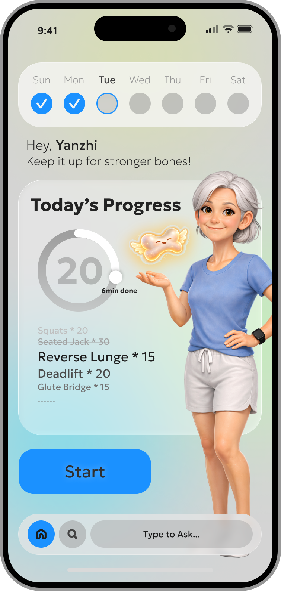
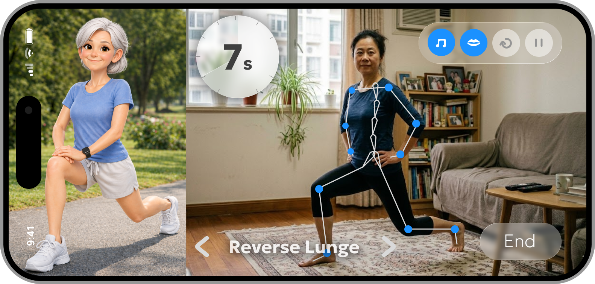

A mobile health companion designed to make bone health visible, habitual, and socially shared — through movement and daily ritual.
Bone health is one of medicine's most overlooked preventive challenges — not because people don't care, but because its decline happens silently, invisibly, and over decades. By the time symptoms appear, significant damage is already done.
OsVita is a mobile health game that approaches this not through clinical alerts or data dashboards, but through small daily movement rituals, a living bone spirit companion, and quiet social encouragement. The goal: make prevention feel meaningful, not urgent.
There are no symptoms until fracture. Unlike weight or fitness, bone density gives users no feedback loop — making it psychologically easy to deprioritize indefinitely.
The payoff is 20–30 years away. Standard health apps rely on fear-based messaging or clinical data — neither of which sustains long-term behavioral change.
Research shows women over 40 face a complex web of barriers: social isolation in exercise, lack of real-time feedback, mismatched programs, and time pressure.
"How do we design for parts of the body that are structurally essential but phenomenologically absent? How do we build a relationship with the invisible structure of our own bodies?"
Synthesized behavioral science, bone health research, and aging-centered design literature to identify the five core barriers to exercise adherence in older women.
Designed the full system loop — from onboarding and camera calibration, through the workout session, to post-session feedback and social sharing.
Art-directed two competing visual styles — cartoonish and modern — and produced 1,200+ AI-generated face models for character customization.
Conducted a systematic literature review on bone health, osteoporosis epidemiology, and exercise adherence in older adults. Synthesized five paired barrier-motivation factors that became the design constraints for every feature.
Key insight: existing apps either medicalize the experience (clinical, fear-driven) or ignore the aging body entirely. Neither builds lasting relationship with one's own health.
Mapped a full interaction architecture: from first-launch onboarding animation to daily habit loop. Defined a "warm re-entry" model — each session greets the user by name, acknowledges consistency via streaks, and never guilts them for absence.
The system was designed to feel like a companion, not a tracker. The "Little Bone Spirit" grows visibly with user engagement — making invisible progress tangible.
Prototyped two competing visual directions — a warm, cartoonish style emphasizing playfulness and the bone spirit metaphor, and a clean modern style with photorealistic workout companions. Rather than deciding arbitrarily, both styles were prepared for ethnographic testing with target users to let real preferences guide the direction.
A warm cartoonish palette and a clean modern direction — both fully developed across the home screen and workout session, ready for ethnographic testing with real users to determine the final direction.


On-device motion tracking via phone camera evaluates exercise form against target postures, giving immediate visual feedback — no equipment needed.
DesignedA virtual mascot that grows and responds to consistent engagement, making invisible bone health progress feel tangible and rewarding.
DesignedSkip, restart, or end any time. Sessions are short enough to fit into daily life without friction — the lowest-barrier path to consistency.
PrototypedShare workout time (with consent) and cheer on family or friends. Encouragement without competition — designed for multigenerational connection.
DesignedContextual educational content woven into the experience — not a clinical tab, but brief, relevant knowledge that surfaces at the right moments.
Designed1,200+ AI-generated face models enable users to personalize their workout companion — a rare representation of aging bodies done with dignity.
ProducedOsVita was built around a single conviction: health technology for older adults should feel like a trusted companion, not a clinical tool. The user shouldn't have to be motivated by fear — they should be gently invited into a daily ritual.
This informed every design choice: the warm cream palette, the non-competitive social system, the bone spirit that grows rather than depletes, and the choice to never guilt users for missing a session.
The design language borrows from Japanese kansei — attending to emotional resonance, not just usability — applied to a domain that desperately needs more humanistic thinking.
Evidence-informed exercise content, built with healthcare expert consultation in scope.
Growth-based feedback makes invisible skeletal changes feel real and earned.
Short sessions, no guilt mechanics, gradual intensity — sustainability over performance.
Encouragement and belonging, never leaderboards or comparative pressure.
Typography, contrast, interaction patterns — designed with older adults as the primary user, not an afterthought.
Full system architecture and wireframes complete — from sign-up through workout session, social page, and post-session feedback loop.
Two high-fidelity art styles produced — cartoonish and modern — ready for ethnographic user testing with target audience to determine direction.
IRB application submitted — ethnographic interviews in progress with Mandarin-speaking middle-aged and older women, to ground design decisions in lived experience.
Academic paper in development — exploring the research question: how do we design for body systems that are structurally essential but experientially invisible?